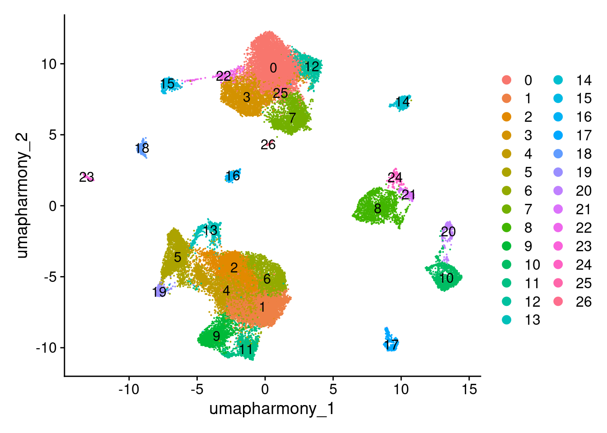
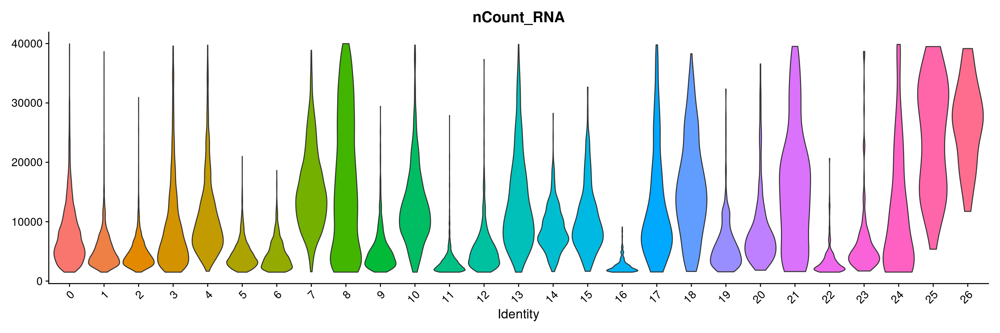
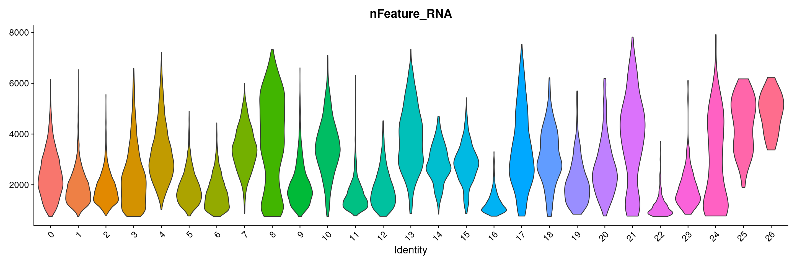
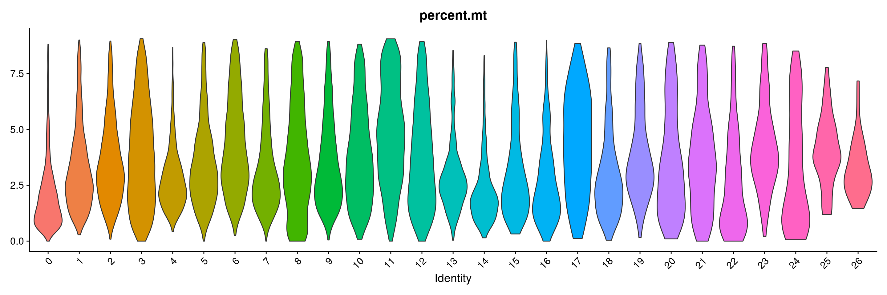
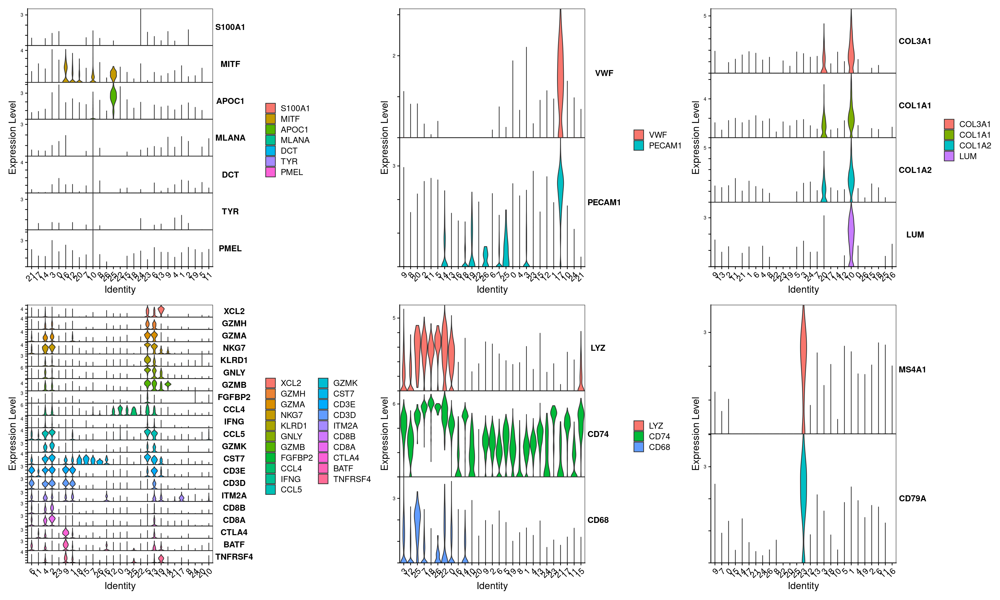
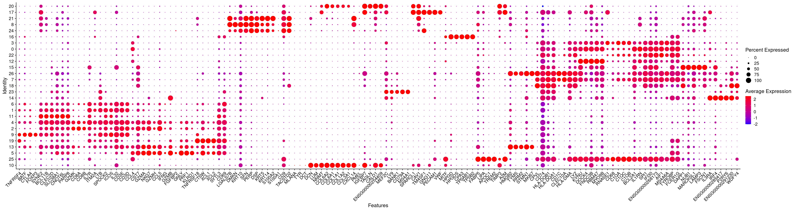
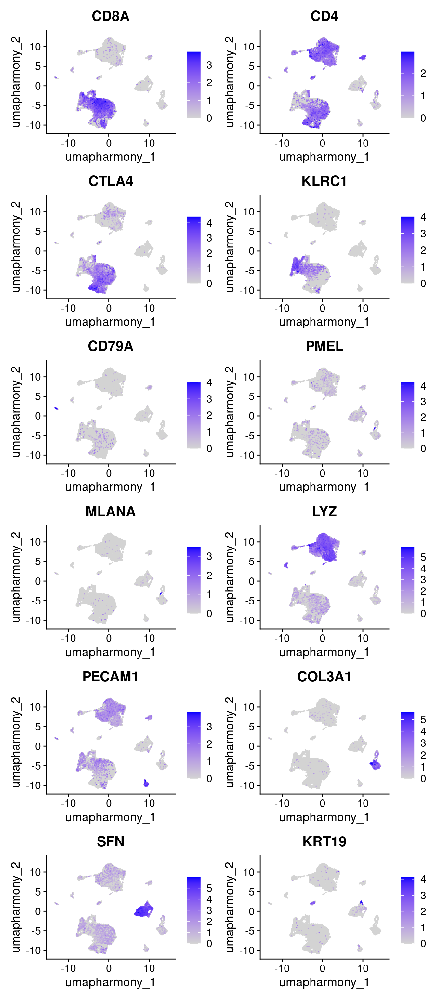

# Load libraries
library(data.table)
library(devtools)
library(presto)
library(glmGamPoi)
library(sctransform)
library(Seurat)
library(tidyverse)
library(miQC)
library(SeuratWrappers)
library(flexmix)
library(SingleCellExperiment)
library(SummarizedExperiment)
library(readxl)
library(fishpond)
library(Matrix)
library(speckle)
library(scater)
library(patchwork)
library(vctrs)
library(alevinQC)
library(harmony)
library(scDblFinder)
library(cellXY)
# Set global options for Seurat v5 objects
options(Seurat.object.assay.version = 'v5')4 Skin: Post-clustering QC and characterization
4.1 Set up Seurat workspace
4.2 Load previously saved object
merged.18279.skin.singlets <- readRDS("Skin_scRNA_Part3.rds")4.3 Set idents to preferred initial clustering resolution
Idents(merged.18279.skin.singlets) <- merged.18279.skin.singlets$RNA_snn_res.0.8
merged.18279.skin.singlets$seurat_clusters <- merged.18279.skin.singlets$RNA_snn_res.0.8
DimPlot(merged.18279.skin.singlets, reduction="umap.harmony", label = TRUE)
4.4 Plot QC
VlnPlot(merged.18279.skin.singlets, features = "nCount_RNA", group.by="seurat_clusters",pt.size=0) + NoLegend()
VlnPlot(merged.18279.skin.singlets, features = "nFeature_RNA", group.by="seurat_clusters",pt.size=0) + NoLegend()
VlnPlot(merged.18279.skin.singlets, features = "percent.mt", group.by="seurat_clusters",pt.size=0) + NoLegend()
4.5 Identify cursory marker genes of each cluster
Note layers were already joined in previous session
DefaultAssay(merged.18279.skin.singlets) <- "RNA"
vargenes <- presto::wilcoxauc(merged.18279.skin.singlets, 'seurat_clusters', seurat_assay = 'RNA')
top_vargenes <- top_markers(vargenes, n = 100, auc_min = 0.5, pct_in_min = 50, pct_out_max = 50)
top_vargenes# A tibble: 100 × 28
rank `0` `1` `10` `11` `12` `13` `14` `15` `16` `17` `18` `19`
<int> <chr> <chr> <chr> <chr> <chr> <chr> <chr> <chr> <chr> <chr> <chr> <chr>
1 1 TYRO… IL7R COL6… CNOT… DOCK4 STMN1 ENSG… LAMP3 HPGD TM4S… CPVL XCL1
2 2 BCL2… SPOC… DCN SYNE2 RBM47 HMGB2 IL3RA FSCN1 TPSA… SPAR… WDFY4 TNFR…
3 3 IL1RN CD3E COL6… PARP8 FNDC… TYMS IRF4 DAPP1 TPSB2 PECA… ENSG… XCL2
4 4 FCER… LTB COL1… BCL1… MYO9B RRM2 P2RY6 MARC… CPA3 GNG11 HLA-… CTSW
5 5 IFI30 IL32 NNMT SLC3… KYNU MKI67 ENSG… NUB1 HPGDS CAV1 HLA-… SYTL3
6 6 MARC… ICOS CALD1 PRKCH CYRIA DUT PLD4 CERS6 GATA2 RAMP2 C1or… CD69
7 7 PLAUR CD52 C1R PPP1… ABCA1 PCLAF SLC1… CD83 KIT A2M DNAS… RIN3
8 8 S100… CD3D SELE… RORA DMXL2 H4C3 JCHA… CCR7 CTSG PDLI… HDAC9 CD96
9 9 ENSG… CD2 CXCL… CAMK4 ATP1… MCM7 POLB BASP1 HDC ADGR… RUBC… CSF2
10 10 PLEK CD6 COL1… KLF12 FNIP2 KIF22 FCHS… CSF2… IL18… EMCN CLEC… KLRB1
# ℹ 90 more rows
# ℹ 15 more variables: `2` <chr>, `20` <chr>, `21` <chr>, `22` <chr>,
# `23` <chr>, `24` <chr>, `25` <chr>, `26` <chr>, `3` <chr>, `4` <chr>,
# `5` <chr>, `6` <chr>, `7` <chr>, `8` <chr>, `9` <chr>4.7 Plot other known markers
Sourced from this paper
tumor <- c("DCT","MLANA","MITF","PMEL","S100A1","TYR","APOC1")
endothelial <- c("PECAM1","VWF")
fibroblast <- c("COL3A1","COL1A1","COL1A2","LUM")
tcell <- c("FGFBP2","KLRD1","CD3E","CD3D","GZMB","XCL2","GZMH","CST7","GZMK","GZMA","IFNG","GNLY","CCL4","NKG7","CCL5","CD8A","CD8B","CTLA4","TNFRSF4","BATF","ITM2A")
mono <- c("LYZ","CD74","CD68")
bcell <- c("MS4A1","CD79A")
VlnPlot(merged.18279.skin.singlets,features=tumor,assay="RNA",layer="data",flip=T,sort=T,stack=T) +
VlnPlot(merged.18279.skin.singlets,features=endothelial,assay="RNA",layer="data",flip=T,sort=T,stack=T) +
VlnPlot(merged.18279.skin.singlets,features=fibroblast,assay="RNA",layer="data",flip=T,sort=T,stack=T) +
VlnPlot(merged.18279.skin.singlets,features=tcell,assay="RNA",layer="data",flip=T,sort=T,stack=T) +
VlnPlot(merged.18279.skin.singlets,features=mono,assay="RNA",layer="data",flip=T,sort=T,stack=T) +
VlnPlot(merged.18279.skin.singlets,features=bcell,assay="RNA",layer="data",flip=T,sort=T,stack=T) +
NoLegend()
4.8 Plot top markers identified and canonical genes as a dotplot
top_vargenes <- top_markers(vargenes, n = 5, auc_min = 0.5, pct_in_min = 50, pct_out_max = 50)
top_markers <- top_vargenes %>%
select(-rank) %>%
unclass() %>%
stack() %>%
pull(values) %>%
unique() %>%
.[!is.na(.)]
dotplotmarkers <- unique(c(top_markers,tumor,endothelial,fibroblast,tcell,mono,bcell))
# Compute aggregated expression values of these genes and cluster them to order the figure
rna <- AverageExpression(merged.18279.skin.singlets,assay="RNA",slot="data")As of Seurat v5, we recommend using AggregateExpression to perform pseudo-bulk analysis.
First group.by variable `ident` starts with a number, appending `g` to ensure valid variable names
This message is displayed once per session.rna.sub <- rna$RNA[dotplotmarkers,]
cors.genes <- as.dist(1-cor(as.matrix(t(rna.sub)),method="pearson"))
hc.genes <- hclust(cors.genes)
dotplotmarkers.sorted <- rownames(rna.sub)[hc.genes$order]
# Plot
DotPlot(merged.18279.skin.singlets,features=dotplotmarkers.sorted,assay="RNA",cols=c("blue","red"),cluster.idents=T) + RotatedAxis()
4.9 Plot expression of key genes in UMAP space
FeaturePlot(merged.18279.skin.singlets,
reduction="umap.harmony",
features=c("CD8A","CD4","CTLA4","KLRC1","CD79A","PMEL","MLANA","LYZ","PECAM1","COL3A1","SFN","KRT19"),
order = T,
ncol = 2)
4.10 Get session info
sessionInfo()R version 4.3.1 (2023-06-16)
Platform: x86_64-pc-linux-gnu (64-bit)
Running under: Rocky Linux 8.10 (Green Obsidian)
Matrix products: default
BLAS/LAPACK: /usr/lib64/libopenblasp-r0.3.15.so; LAPACK version 3.9.0
locale:
[1] LC_CTYPE=en_US.UTF-8 LC_NUMERIC=C
[3] LC_TIME=en_US.UTF-8 LC_COLLATE=en_US.UTF-8
[5] LC_MONETARY=en_US.UTF-8 LC_MESSAGES=en_US.UTF-8
[7] LC_PAPER=en_US.UTF-8 LC_NAME=C
[9] LC_ADDRESS=C LC_TELEPHONE=C
[11] LC_MEASUREMENT=en_US.UTF-8 LC_IDENTIFICATION=C
time zone: America/New_York
tzcode source: system (glibc)
attached base packages:
[1] stats4 stats graphics grDevices utils datasets methods
[8] base
other attached packages:
[1] cellXY_0.99.0 scDblFinder_1.14.0
[3] harmony_1.2.0 alevinQC_1.16.1
[5] vctrs_0.6.5 patchwork_1.3.0
[7] scater_1.28.0 scuttle_1.10.3
[9] speckle_1.0.0 Matrix_1.6-4
[11] fishpond_2.6.2 readxl_1.4.3
[13] SingleCellExperiment_1.22.0 SummarizedExperiment_1.30.2
[15] Biobase_2.60.0 GenomicRanges_1.52.1
[17] GenomeInfoDb_1.36.4 IRanges_2.34.1
[19] S4Vectors_0.38.2 BiocGenerics_0.46.0
[21] MatrixGenerics_1.12.3 matrixStats_1.2.0
[23] flexmix_2.3-19 lattice_0.22-5
[25] SeuratWrappers_0.3.19 miQC_1.8.0
[27] lubridate_1.9.3 forcats_1.0.0
[29] stringr_1.5.1 dplyr_1.1.4
[31] purrr_1.0.2 readr_2.1.5
[33] tidyr_1.3.1 tibble_3.2.1
[35] ggplot2_3.4.4 tidyverse_2.0.0
[37] Seurat_5.1.0 SeuratObject_5.0.2
[39] sp_2.1-3 sctransform_0.4.1
[41] glmGamPoi_1.12.2 presto_1.0.0
[43] Rcpp_1.0.12 devtools_2.4.5
[45] usethis_2.2.2 data.table_1.15.0
loaded via a namespace (and not attached):
[1] fs_1.6.3 spatstat.sparse_3.0-3
[3] bitops_1.0-7 httr_1.4.7
[5] RColorBrewer_1.1-3 profvis_0.3.8
[7] tools_4.3.1 utf8_1.2.4
[9] R6_2.5.1 DT_0.31
[11] lazyeval_0.2.2 uwot_0.1.16
[13] urlchecker_1.0.1 withr_3.0.0
[15] GGally_2.2.1 gridExtra_2.3
[17] progressr_0.14.0 cli_3.6.2
[19] spatstat.explore_3.2-6 fastDummies_1.7.3
[21] labeling_0.4.3 spatstat.data_3.0-4
[23] ggridges_0.5.6 pbapply_1.7-2
[25] Rsamtools_2.16.0 R.utils_2.12.3
[27] parallelly_1.37.0 sessioninfo_1.2.2
[29] limma_3.56.2 RSQLite_2.3.5
[31] BiocIO_1.10.0 generics_0.1.3
[33] gtools_3.9.5 ica_1.0-3
[35] spatstat.random_3.2-2 ggbeeswarm_0.7.2
[37] fansi_1.0.6 abind_1.4-5
[39] R.methodsS3_1.8.2 lifecycle_1.0.4
[41] yaml_2.3.8 edgeR_3.42.4
[43] Rtsne_0.17 blob_1.2.4
[45] grid_4.3.1 dqrng_0.3.2
[47] promises_1.2.1 crayon_1.5.2
[49] shinydashboard_0.7.2 miniUI_0.1.1.1
[51] beachmat_2.16.0 cowplot_1.1.3
[53] KEGGREST_1.40.1 metapod_1.8.0
[55] pillar_1.9.0 knitr_1.45
[57] rjson_0.2.21 xgboost_1.7.7.1
[59] future.apply_1.11.1 codetools_0.2-19
[61] leiden_0.4.3.1 glue_1.7.0
[63] remotes_2.4.2.1 png_0.1-8
[65] spam_2.10-0 org.Mm.eg.db_3.18.0
[67] cellranger_1.1.0 gtable_0.3.4
[69] cachem_1.0.8 xfun_0.42
[71] S4Arrays_1.2.0 mime_0.12
[73] survival_3.5-8 statmod_1.5.0
[75] bluster_1.10.0 ellipsis_0.3.2
[77] fitdistrplus_1.1-11 ROCR_1.0-11
[79] nlme_3.1-164 bit64_4.0.5
[81] RcppAnnoy_0.0.22 irlba_2.3.5.1
[83] vipor_0.4.7 KernSmooth_2.23-22
[85] DBI_1.2.2 colorspace_2.1-0
[87] nnet_7.3-19 ggrastr_1.0.2
[89] tidyselect_1.2.0 bit_4.0.5
[91] compiler_4.3.1 BiocNeighbors_1.18.0
[93] DelayedArray_0.26.7 plotly_4.10.4
[95] rtracklayer_1.60.1 scales_1.3.0
[97] lmtest_0.9-40 digest_0.6.34
[99] goftest_1.2-3 spatstat.utils_3.0-4
[101] rmarkdown_2.25 XVector_0.40.0
[103] htmltools_0.5.7 pkgconfig_2.0.3
[105] sparseMatrixStats_1.12.2 fastmap_1.1.1
[107] rlang_1.1.3 htmlwidgets_1.6.4
[109] shiny_1.8.0 DelayedMatrixStats_1.22.6
[111] farver_2.1.1 zoo_1.8-12
[113] jsonlite_1.8.8 BiocParallel_1.34.2
[115] R.oo_1.26.0 BiocSingular_1.16.0
[117] RCurl_1.98-1.14 magrittr_2.0.3
[119] modeltools_0.2-23 GenomeInfoDbData_1.2.10
[121] dotCall64_1.1-1 munsell_0.5.0
[123] viridis_0.6.5 reticulate_1.35.0
[125] stringi_1.8.3 zlibbioc_1.46.0
[127] MASS_7.3-60.0.1 org.Hs.eg.db_3.18.0
[129] plyr_1.8.9 pkgbuild_1.4.3
[131] ggstats_0.5.1 parallel_4.3.1
[133] listenv_0.9.1 ggrepel_0.9.5
[135] deldir_2.0-2 Biostrings_2.68.1
[137] splines_4.3.1 tensor_1.5
[139] hms_1.1.3 locfit_1.5-9.8
[141] igraph_2.0.2 spatstat.geom_3.2-8
[143] RcppHNSW_0.6.0 reshape2_1.4.4
[145] ScaledMatrix_1.8.1 pkgload_1.3.4
[147] XML_3.99-0.16.1 evaluate_0.23
[149] scran_1.28.2 BiocManager_1.30.22
[151] tzdb_0.4.0 httpuv_1.6.14
[153] RANN_2.6.1 polyclip_1.10-6
[155] future_1.33.1 scattermore_1.2
[157] rsvd_1.0.5 xtable_1.8-4
[159] restfulr_0.0.15 svMisc_1.2.3
[161] RSpectra_0.16-1 later_1.3.2
[163] viridisLite_0.4.2 AnnotationDbi_1.64.1
[165] GenomicAlignments_1.36.0 memoise_2.0.1
[167] beeswarm_0.4.0 tximport_1.28.0
[169] cluster_2.1.6 timechange_0.3.0
[171] globals_0.16.2